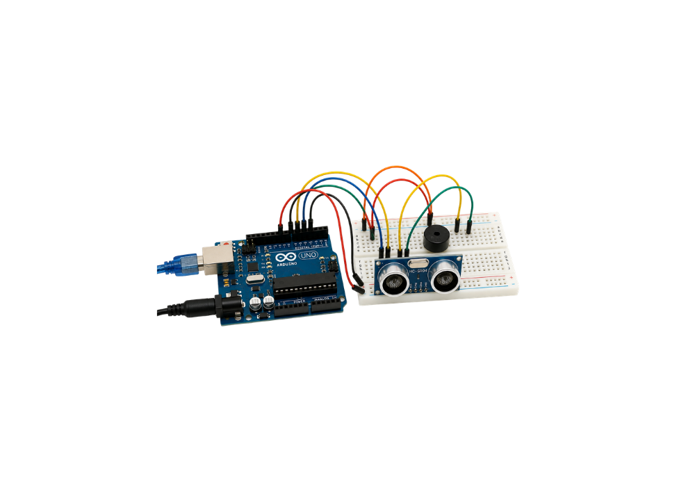
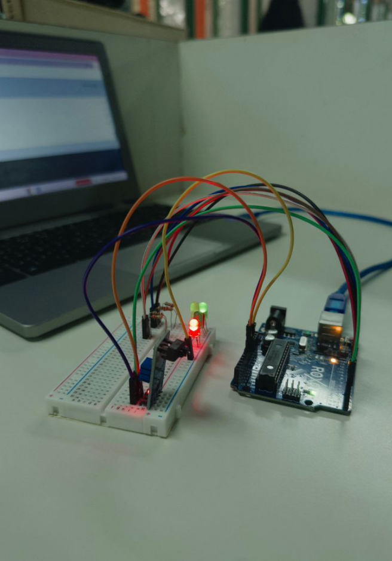
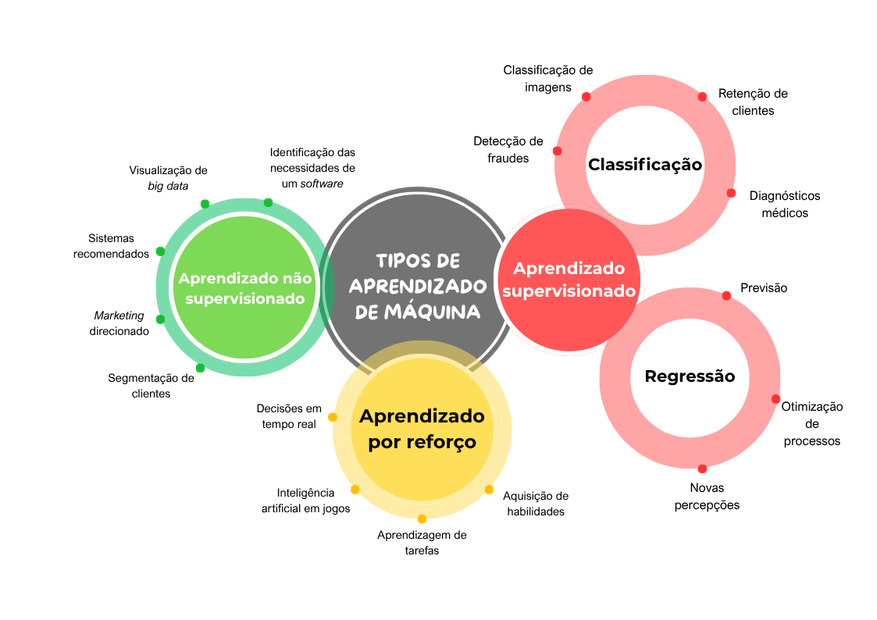
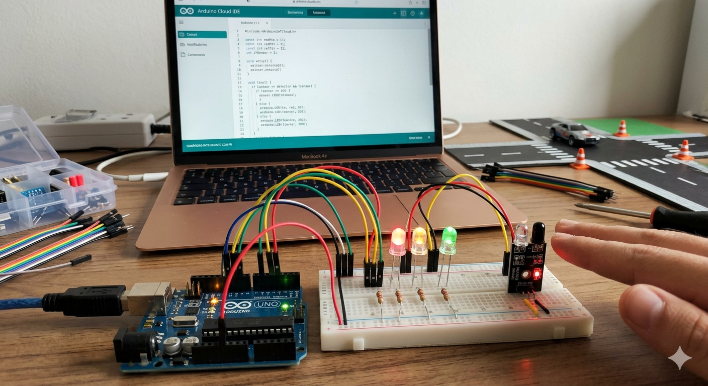
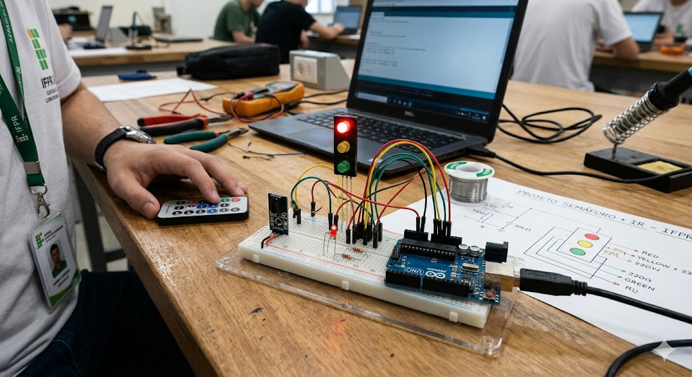

Nos testes com a cadeira de rodas, o sensor ultrassônico HC-SR04, conectado ao Arduino com protoboard e jumpers MM, conseguiu medir distâncias e detectar obstáculos com boa resposta. Foram observadas leituras rápidas e relativamente precisas, mas com pequenas variações e menor eficiência em algumas superfícies. Ainda assim, o sistema se mostrou útil para auxiliar na segurança do usuário.

No trabalho de robótica, desenvolvemos um semáforo com LED's e um sensor infravermelho (IR) que detecta presença. A ideia era simples: enquanto o sensor não identifica nada à frente, o semáforo fica no verde, aceso para os carros. Assim que detecta algo, ele faz a transição para o amarelo e depois para o vermelho para os carros e, para os pedestres, o sinal verde é aceso. Foi um projeto bem interessante porque conseguimos unir um elemento do cotidiano e programação de forma prática, vendo na vida real como sensores e LED's funcionam juntos.

| Modo | Distância | Tempo | Velocidade Média |
|---|---|---|---|
| Normal | 8.92m | 10.16s | 0,87 m/s |
| Olhos vendados (simulando uma pessoa cega) | 8.92m | 14.13s | 0.63 m/s |
| Cadeira de Rodas (simulando cadeirante) | 8.92m | 18.61s | 0,48 m/s |
• Rapidez no desenvolvimento: a IA consegue gerar ideias, códigos e esquemas muito mais rápido do que fazer tudo manualmente.
• Acesso ao conhecimento: você consegue usar conceitos avançados mesmo sem ser especialista em Robótica ou programação.
• Otimização de soluções: a IA pode sugerir melhorias, corrigir erros e até prever problemas no projeto.
• Criatividade: ajuda a ter ideias diferentes, como novos tipos de sensores ou automações
• Erros escondidos: a IA pode gerar códigos ou projetos com falhas que não são fáceis de perceber.
• Limitações práticas: a IA pode sugerir coisas difíceis de montar na vida real (componentes caros ou inexistentes).
• Falta de personalização real: nem sempre o projeto se adapta perfeitamente ao seu objetivo específico.
• Dependência excessiva: Quem usa IA sem entender o que está fazendo cria uma dependência que compromete a capacidade de manter, ajustar ou escalar o projeto futuramente.

✅Benefícios
• Avalia a saúde das plantas, detectando pragas e doenças.
• Sensores de monitoramento do solo fornecem dados analisados pelo algoritmo para indicar com precisão a necessidade de correções, como o uso de aditivos químicos em doses específicas.
• Permite irrigação adequada, evitando o uso excessivo de agrotóxicos e o desperdício de água.
❌ Malefícios
• A dependência de tecnologia cara pode excluir pequenos agricultores que não possuem condição financeira para adquirir tais equipamentos.
• Falhas nos algoritmos podem gerar diagnósticos equivocados e provocar prejuízo na lavoura.
• O uso intensivo de tecnologia no campo aumenta a dependência de empresas de tecnologia estrangeiras, assim, os agricultores são suscetíveis a variações de preço e descontinuidade de serviços.
✅Benefícios
• Sistemas de reconhecimento facial avançados para encontrar pessoas procuradas.
• Os sistemas conseguem analisar grandes quantidades de dados em tempo real.
• Sistemas podem ajudar na identificação e neutralização de ameaças cibernéticas.
❌ Malefícios
• O viés algorítmico do reconhecimento facial pode fornecer dados incorretos.
• Sistemas de IA podem ser vulneráveis a ataques ou manipulação por pessoas mal-intencionadas, comprometendo a segurança nacional.
• Quando hackeados, os dados pessoais coletados pelas pessoas mal-intencionadas podem ser usados indevidamente.
✅Benefícios
• Auxiliam na gestão de resíduos.
• Reduz a quantidade de lixo enviado para aterros sanitários.
• Otimização do transporte público analisando o fluxo de pessoas e tráfego para reduzir filas e evitar atrasos.
❌ Malefícios
• Consome grande quantidade de energia.
• Desemprego em função dos sistemas de IA substituírem o trabalho humano na gestão de resíduos e triagem.
• Falta de transparência nos algoritmos usados, dificultando os cidadãos a entenderem e constarem as decisões da IA.

